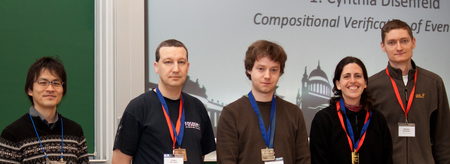

As with previous editions of the AOSD student events, the MODULARITY: aosd•2012 consists of several events designed to engage and connect students both with other students and with domain experts including the Student Forum, the Poster Event, and the Student Research Competition. With the goal of globally connect AOSD student researchers, this year's organizer intend to initiate a virtual student research community before the conference. Register early to get connected.
Announcement
We are happy to announce that AOSD Europe will fund up to 10 grants supporting student registrations for MODULARITY: aosd•2012. We plan to select students based on received applications (not more than 250 words) and target a balanced mix of countries.
Please note: The grants are limited to students from European universities (independent of nationality). A grant includes 250 € that will only be reimbursed after a student has registered for the full conference (350 €).
Submission Summary
Due Date:February 20th, 2012Notification Date:February 25th, 2012-
Due Date: February 24th, 2012Notification Date:-
February 29th, 2012 - Format:
- E-Mail including an application for a grant
- Contact and Submission to:
- This e-mail address is being protected from spambots. You need JavaScript enabled to view it
Student Forum
Room A-1.1
The Student Forum will take place on the Sunday preceding the conference to allow students to meet other students before the main conference begins. As in previous years, the Student Forum will be an interactive format that allows students to interact brainstorm innovative ways that AOSD research interests intersect. Students will also have the opportunity to hear from and ask questions of domain experts both in a panel and small group settings.
Preliminary Schedule
| 9:30–10:00 am | meet and greet |
| 10:00–noon |
Workshop to identify viable areas of research within AOSD
Given the move to a more inclusive program of modularity, the forum will consider the evolution of AOSD research and have students identify areas of research that are inline with the new directions of this community. Students will identify viable research strategies and key research questions related to these AOSD research topics. |
| noon–1:30 pm | Lunch |
| 1:30–3:30 pm |
Panel of experts
Each panelist will provide a basic overview of their existing research and specifically how it fits with the new directions of AOSD research and how it differs from from their first work in the area of AOSD. Results from the morning session will form the basis for the questions to the panel to elicit expert feedback student perspectives. |
| 3:30–3:45 pm | break |
| 3:45–5:45 pm |
Group work and presentations
Based on the results of the previous two sessions, students will be grouped and will work together on poster paper to outline a possible new research project. |
| 6:00 pm | group dinner (self-pay) |
Confirmed Panelists:
- Dr. Christoph Bockisch, University of Twente, The Netherlands
- Dr. Michael Haupt, Oracle Labs Potsdam, Germany
- Prof. Dr. Olaf Spinczyk, Technical University of Dortmund, Germany
- Dr. Stefan Hanenberg, University of Duisburg-Essen, Germany
- Walter Cazzola (PhD), University of Milan, Italy
Important Dates
Please register for the student forum not later than March 18th, 2012.
- Format:
- Informal E-Mail of Participant or via your AOSD Registration
- Contact and Registration to:
- This e-mail address is being protected from spambots. You need JavaScript enabled to view it
Student Poster Session
The Poster Event is always one of the most exciting and well attended social events of the conference. This event, held during the workshop reception on Monday, allows students to present their research to conference attendees while mingling in a social setting. Students that participate in both the Student Forum and the Poster Event have the added advantage of already knowing other participants. Do not miss out on this opportunity to take your research to the next level, clarify problem statements, vet solutions, identify evaluation methods or just prepare for your dissertation.
Submission Summary
-
Due Date: -
February 29th, 2012 - Notification Date:
- March 7th, 2012
- Format:
- E-Mail with attached poster preview
- ISO A1 Portrait printout
- Contact and Submission to:
- This e-mail address is being protected from spambots. You need JavaScript enabled to view it
Posters
Student Research Competition
MODULARITY: aosd•2012 is hosting an ACM SIGPLAN Student Research Competition. The competition, sponsored by Microsoft Research, is an internationally-recognized venue that enables undergraduate and graduate students to experience the research world, share their research results with other students and MODULARITY: aosd•2012 attendees, and compete for prizes. The ACM SIGPLAN Student Research Competition shares the Poster session's goal to facilitate students' interaction with researchers and industry practitioners; providing both sides with the opportunity to learn of ongoing, current research. Additionally, the Student Research Competition affords students with experience with both formal presentations and evaluations.
For more information please visit the Student Research Competition call.
Student Participants
Award Winners

From left to right: Hidehiko Masuhara (Student Events Chair), Jurgen Van Ham (3rd place), Jens Nicolay (2nd place), Cynthia Disenfeld (1st place), Michael Perscheid (Student Events Chair)
Competition Committee
- Jonathan Aldrich, Carnegie Mellon University, USA
- Christoph Bockisch, University of Twente, The Netherlands
- Yvonne Coady, University of Victoria, Canada
- Tom Dinkelaker, Technische Universität Darmstadt, Germany
- Erik Ernst, Aarhus University, Denmark
- Stefan Hanenberg, University of Duisburg-Essen, Germany
- Michael Haupt, Oracle Labs, Potsdam, Germany
- Atsushi Igarashi, Kyoto University, Japan
- Hidehiko Masuhara, The University of Tokyo, Japan
- Ana Moreira, Universidade Nova de Lisboa, Portugal
- Michael Perscheid, Hasso-Plattner-Institut, University of Potsdam, Germany
Student Events Chairs
Feel free to contact the student event chairs at This e-mail address is being protected from spambots. You need JavaScript enabled to view it